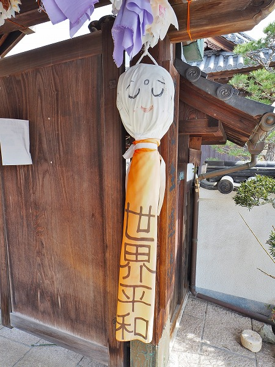

奈良県の南西部に位置する五條市。
高野山にもほど近いこの地に
生蓮寺という寺院がある。
一見して歴史のありそうな立派なお寺だが、山門に近づくと何やら
ただならぬ雰囲気が感じられる。
何と、山門には
無数のてるてる坊主が吊るされているではないか！
見れば
雨晴子授安産の祈願所とある。
ここは世にも珍しい
晴れ祈願のお寺なのだ。
山門の両脇には特に巨大なてるてる坊主が吊るされている。


晴れだけでなく世界平和の願いも込められている。
てるてる坊主に世界平和の願いが効くかどうかは判らないが、昨今の御時世を反映した奉納といえよう。
山門の下に吊られた大量のてるてる坊主。
端切れなどを使い作ったものなのだろうか？
様々な色や模様があって賑やかだ。
このお寺はてるてる坊主だけでなく、様々な見どころがある。
そのうちのひとつ。
お手製の石彫。「ようこそ」と書かれた観音様。
「おおきに」と書かれたお地蔵様。
このようなカラフルな彫刻が境内に点在しており、カラフルな境内をより一層賑やかにしてくれていて印象的だった。
さてさて気になるてるてる坊主に戻ろう。
山門を潜ると本堂が見えてくる。
本堂の前にもたくさんのてるてる坊主が下がっているではないか。
こちらも様々な色や柄のてるてる坊主があり見ていて飽きない。
何故こんなにたくさんのてるてる坊主が奉納されているのか？
それは
弘法大師の伝説に起因する。
その昔、弘法大師が高野山へ行く途中この生蓮寺に寄ったという。
その際、
道中の晴れを祈願したので今でも晴れ祈願の寺として有名なのだそうだ。
このてるてる坊主、
3月にお焚き上げをするのだとか。
多い時は数千体のてるてる坊主で本堂の前が埋め尽くされる。
ちなみに高野山で大きな行事がある際は
高野山からも人が来て晴れ祈願をするというのだからその御利益たるやかなりのものといえよう。
本堂の内部に入ってみる。
正面には本尊の巨大な地蔵菩薩座像がおわす。
高さは
328㎝。堂々とした大仏である。
永禄
13（
1570）年、つまり
室町末期に建立されたとても歴史のある仏像なのだ。
室町末期に建立された
3ⅿ超えの大仏。
特に指定はされていないようだが重要文化財に指定されてもおかしくないような貴重な仏像だ。
しかしその目前にはこれまたてるてる坊主がぶら下がっている。
この晴れ祈願、全国から送られてくるそうだが、近在の方は自作のてるてる坊主を持ち込んだり、堂内で販売されているものを購入して奉納したりしている。
販売用のてるてる坊主も既製品などではなく、手造り感満載でこの寺のアットホームな温かみが感じられる。

奉納されているてるてる坊主の多くがにこやかな表情を見せているのが印象的だった。
近づいて正面で参拝。
室町時代の大仏に貸し切りでこんなに肉薄出来ていいのだろうか？
かなり贅沢な体験が出来るので大仏好き、仏像好きにもお薦めの寺なのである。
本尊の左右には脇侍がいる。
向かって左には全身真っ赤な掌悪童子。
杖を持ち、遠くを眺めているようなポーズ。
煩悩を滅ぼすと言われている。
一方、向かって右には白い身体の掌善童子。
蓮の花を持ち穏やかな表情をしている。
こちらは仏心を育てるという。
堂内に奉納されていた絵。
巨大な三鈷杵を男達が担いでいる。
その後ろには巨大な子供の像。
弘法大師の幼い頃の姿なのだろうか？
こんな凄い祭りが実際にあるのだろうか。
だとしたら絶対行きたいぞ！
この寺は子授けや安産の祈願でも篤い信仰を集めている。
嵯峨天皇皇女の懐妊の際、安産祈願を行ったのがこの寺の始まりとされているためだ。
軒下にあった地獄絵図。
状態からして比較的近年のものと思われる。
ここでの地蔵菩薩は地獄で亡者を救う存在として描かれている。
同じく軒下にあった
おびんずる様。
釈迦の弟子にして病を治す能力に長けていた。
そのため「撫で仏」として身体の悪いところをさすると治ると言われている。
お陰で
霊験あらたかなおびんずる様ほど撫でられ過ぎて身体がボロボロになってしまうのだ。
こちらのおびんずる様も御利益があるようで、赤い漆はあちこち剝れ、目は白濁している。
それでも笑い顔で皆さんに安心と健康をお届けしておりますよ。
境内にはたくさんの鉢が並んでいる。
寺名の生蓮寺に因んで蓮の栽培を行っているのだ。
訪問時はシーズンではなかったが、夏には見事な花を咲かせる事だろう。
その先にある庭園。
蓮池があり鉢も並んでいた。
ここは永代供養墓でもある。
白砂利が敷き詰められた庭園に蓮の花が咲いたらまるで極楽浄土のような眺めになるのだろう。
これにて生蓮寺ツアーは終了。
お焚き上げ直前になると本堂の正面がテルテル坊主で埋め尽くされるという。
その時期に再訪したいものだ。
本堂脇にあった
2体の手作り地蔵。
こうした
細かい気遣いが天気のみならず参拝者の気持ちをも晴れ晴れとさせてくれるのであろう。
とても素敵なお寺であった。<